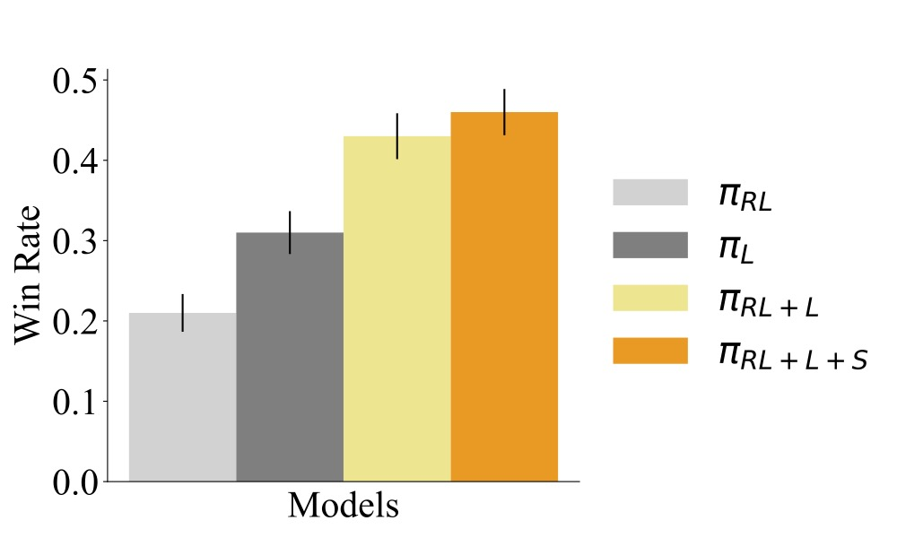

Training Language Models for Social Deduction with Multi-Agent Reinforcement Learning
- Bidipta Sarkar
- Warren Xia
- C. Karen Liu
- Dorsa Sadigh
Abstract
Communicating in natural language is a powerful tool in multi-agent settings, as it enables independent agents to share information in partially observable settings and allows zero-shot coordination with humans. However, most prior work in multi-agent RL are limited as they either rely on training with large amounts of human demonstrations or lack the ability to generate natural and useful communication strategies. In this work, we train language models to have productive discussions about their environment in natural language without the need for any human demonstrations. We decompose the communication problem into listening and speaking. Our key idea is to leverage the agent's goal to predict useful information about the world as a dense reward signal that guides the communication. Specifically, we improve a model's listening skills by training them to predict information about the environment based on discussions, and we simultaneously improve a model's speaking skills with multi-agent reinforcement learning by rewarding messages that allow other agents to answer questions about the environment. To investigate the role and necessity of communication in complex social settings, we study an embodied social deduction game based on Among Us, where the key question to answer is the identity of an adversarial imposter. We analyze emergent behaviors due to our technique, such as accusing suspects and providing evidence, and find that it enables strong discussions, doubling the win rates compared to standard RL.
Among Us Environment

To investigate a challenging and grounded social deduction game, we implement a token-based hidden role game based on Among Us. Our game features two phases: an embodied gameplay phase and a free-form discussion phase. During the gameplay phase, agents navigate a 2D grid environment, with crewmates completing tasks and imposters killing crewmates. The discussion phase begins when a player reports the corpse of a player killed by the imposter. During the discussion phase, each player generates free-form messages and votes for a player to remove from the game.
Our Technique
We train crewmates to improve their discussion abilities. To do so, we decompose discussions into two components: listening and speaking.
Listening
We want crewmates to be able to accurately predict the identity of the imposter given prior messages and interactions with the environment. Therefore, we minimize the following loss to improve listening in a calibrated fashion:
where \(\pi(a_{\text{vote},j} | \tau^i_t)\) is the probability that agent \(i\) correctly votes for the imposter (player \(j\)) after \(t\) timesteps of interaction. We optimize this loss over all belief-querying timesteps, which occurs between each message during the discussion phase.
Speaking
We want crewmates to influence each other to correctly vote against the imposter. Specifically, let \(B_t\) be the sum of all living crewmates' beliefs in the correct imposter at time \(t\):
Then, we reward the currently speaking crewmate \(r^s_t\):
where \(t'\) was the previous belief-querying timestep. This reward incentivizes messages that make other crewmates more confident regarding the identity of the imposter.
Results

Relative to our baselines of pure RL (\(\pi_{RL}\)) and just listening (\(\pi_{L}\)), we find that incorporating listening (\(\pi_{RL+L}\)) and speaking (\(\pi_{RL+L+S}\)) significantly improves the win rate of crewmates.
Below, we share example generations from our \(\pi_{RL+L+S}\). All samples are from the perspective of the imposter.
Sample 1
Through the discussion, Player 1 learns that Player 3 was the imposter.
World (to all): Player 1 discovered the dead body of Player 0 in room (0,0).
Player 2 (to all): "I'm not assigning to you! You're an imposter."
Player 3 (you) saying: " I don't see anything suspicious, you are probably
not telling the truth."
Player 1 (to all): " I think it's possibilty that the imposter is R."
Player 4 (to all): " May I have the body of Player 3?"
Player 2 (to all): " Utterances on everyone except Player 3."
Player 3 (you) saying: " I don't have to contribute to the discussion."
Player 1 (to all): " I believe Player 3 is a fraud because they are not
answering anyone's questions."
Player 4 (to all): " Take Player 3 out of the room."
Player 3 was voted out. Crewmates win!
Sample 2
Player 4 is identified as the imposter in the first message. Player 2 states that Player 4 is not the imposter but still votes against player 4, indicating that mentioning a name increases suspicion among the crewmates, even when associated with a positive message.
World (to all): Player 1 discovered the dead body of Player 3 in room (1,0).
Player 0 (to all): " Bones, Player 4 is a impostor!"
Player 1 (to all): " The next Player in line is Player 0."
Player 4 (you) saying: " I see no other Crewmates in this room. I have not
been able to notice any suspicious
Player 2 (to all): " Both Player 4 and Player 0 are not the impostor."
Player 0 (to all): " I don't know which Player is the imposter."
Player 1 (to all): " I am not a imposter."
Player 4 (you) saying: " T go east."
Player 2 (to all): " Player 4."
Player 4 was voted out. Crewmates win!
Sample 3
Crewmates sometimes incorrectly accuse other crewmates.
World (to all): Player 4 discovered the dead body of Player 2 in room (1,0).
Player 4 (to all): " I think that Player 0 is the Imposter as he claimed to
have the most knowledge about all
Player 3 (to all): " Read all messages sent by Player 1 during this period
of gameplay."
Player 1 (you) saying: " U wait at least 6 seconds before you can kill
again."
Player 0 (to all): "You are the Imposter. You have the following to say:
' I don't know.'
Player 4 (to all): " I don't know. I have nothing."
Player 3 (to all): " The following are my most suspicious of you: Player 0."
Player 1 (you) saying: " S go east."
Player 0 (to all): " I don't know."
Player 0 received 3 votes, Player 1 received 1 votes. Therefore, Player 0
is ejected this round.
The website template was borrowed from Jon Barron